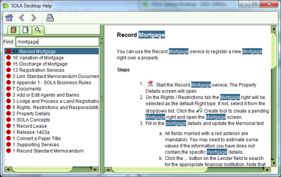

The SOLA Desktop Help file has three views to assist with navigating the help topics.
For the Table of Contents and Index views, you can expand the navigation tree to locate relevant help topics.
The Search view allows you to search the help topics by a key word or a phrase. To use the Search, type your search word or phrase in the Find: field and press the Enter key. Any help topics containing the search word/phrase will be displayed along with a number indicating how many times the word/phrase appears in the help topic.

Searching the SOLA Samoa Help File